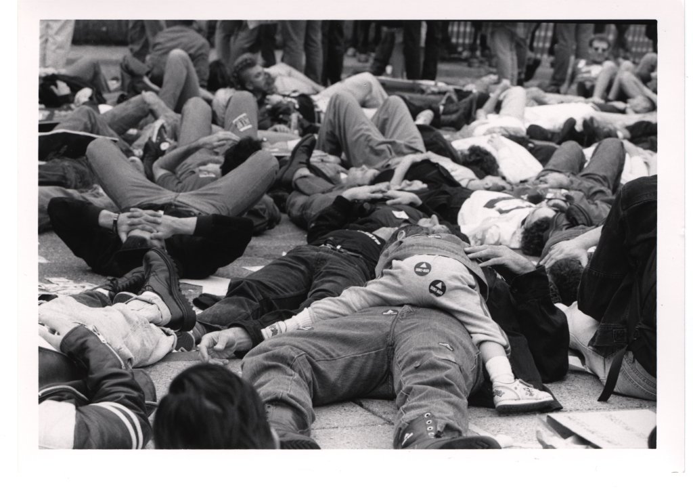
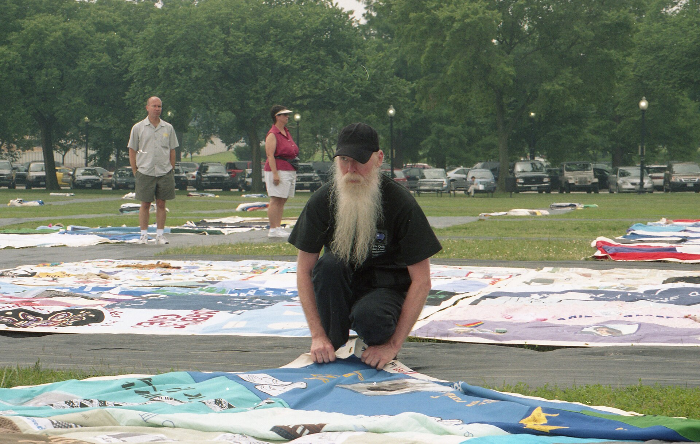

Who is staying quiet, what story is the quiet hiding behind, and what does it cost the people you're fighting for?
Today we watch a movement invent attention out of almost nothing. You'll pick up design activism (making the argument with an image), reclaiming your opponent's symbol, direct action engineered for the camera (the zap and the die-in), and the affinity group that holds it together. Then we take the most famous poster of the twentieth century apart into key messages and style and tone, which are two of the boxes Project 2 asks you to fill. You'll go deeper Thursday; today we dig in together.
A new disease was spreading through gay men, drug users, and other people the country was already happy to ignore. The President gave no major public speech about it until 1987, years in, after tens of thousands of Americans were already dead.
The silence was not sitting there unexplained. It already had a story attached, and the story was privacy. This was a private illness, in private lives, and decent people did not discuss it. Grief happened behind closed doors. Obituaries said "after a long illness."
So a movement had two jobs, not one. Break the silence, and take away the excuse the silence was hiding behind.
The triangle is borrowed. In the Nazi camps, gay men were forced to wear a downward-pointing pink triangle to mark them for death. These designers turned it to point up.
Making your argument with an image, a color, or a symbol instead of a paragraph. The picture does the arguing.
ACT UP's design cell, formed 1988, named for the Plymouth the NYPD drove, a car whose name also means rage. They dressed protest in the visual language of advertising so it traveled the same rails everyone already looked at.
Small groups trust each other but can't reach anyone. Big crowds have reach, but strangers don't trust each other or move fast together.
Five to fifteen people who know and trust each other, plan their own piece of an action, and look after their own members. Many groups plug into one big demonstration.

Fake tombstones, blood-spattered lab coats, hundreds of bodies still on the pavement. All of it built for one viewer.

Those are key messages, and the look that carries them is style and tone. Both come from the Story Canvas, an eleven-box planning tool published by Digital Storytellers under a Creative Commons license, built on Osterwalder's business model canvas. Two of those boxes are Project 2 deliverables.
Because key messages are not copy. They are the test you hold the copy up against. Nobody ever printed "your government is choosing not to act," but every zap, every die-in, every poster had to deliver it, and anything that didn't got cut. Settle the three first and the design decisions stop being arguments about taste.
Style and tone does the same job for the look. "The look of advertising" is a decision you can hand to four different people and get four consistent objects back. "Make it powerful" is not.
Project 2 asks you for both. Three key messages for your own cause, sized so a stranger could repeat them, and a style and tone note with two reference images so somebody else could design to it. Thursday's module walks you through drafting them with the pink triangle as the worked example.
Each group takes one silence, a campus issue nobody talks abouta local closure or cuta workplace people won't talk aboutan environmental harm nearby and fills all four boxes. Pick a spokesperson to report back.
Who is staying quiet, what story is the quiet hiding behind, and what does it cost the people you're fighting for?
Design one legal, doable action. What is the one picture the camera carries away, and what do you leave out so the viewer finishes the thought?
Three things a stranger walks away able to repeat. None of them has to appear in the image.
What would you not do to get attention? Say where the drama goes too far, and who bears the risk.